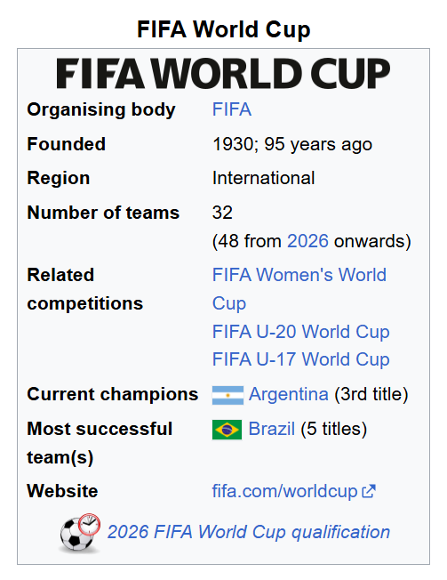

FIFA World Cup
The FIFA World Cup, often called the World Cup, is an international
association football competition among the senior men's national teams
of the members of the Fédération Internationale de Football Association
(FIFA), the sport's global governing body. The tournament has been held
every four years since the inaugural tournament in 1930, with the
exception of 1942 and 1946 due to the Second World War. The reigning
champions are Argentina, who won their third title at the 2022
tournament by defeating France. The contest starts with the
qualification phase, which takes place over the preceding three years to
determine which teams qualify for the tournament phase. In the
tournament phase, 32 teams compete for the title at venues within the
host nation(s) over the course of about a month. The host nation(s)
automatically qualify for the group stage of the tournament. The
competition is scheduled to expand to 48 teams, starting with the 2026
tournament. As of the 2022 FIFA World Cup, 22 final tournaments have
been held since the event's inception in 1930, and a total of 80
national teams have competed. The trophy has been won by eight national
teams. With five wins, Brazil is the only team to have played in every
tournament. The other World Cup winners are Germany and Italy, with four
titles each; Argentina, with three titles; France and inaugural winner
Uruguay, each with two titles; and England and Spain, with one title
each. The World Cup is globally regarded as the most prestigious
association football competition, as well as the most widely viewed and
followed sporting event in the world. The viewership of the 2018 World
Cup was estimated to be 3.57 billion, close to half of the global
population, while the engagement with the 2022 World Cup was estimated
to be 5 billion, with about 1.5 billion people watching the final match.
Seventeen countries have hosted the World Cup, most recently Qatar, who
hosted the 2022 event. The 2026 tournament will be jointly hosted by
Canada, Mexico, and the United States, which will give Mexico the
distinction of being the first country to host games in three World
Cups.


first 3 countries won FIFA world Cup
- 1930 Uruguay - Uruguay - Uruguay 4-2 Argentina
- 1934 Italy - Italy - Italy 2-1 Czechoslovakia
- 1938 France - Italy - Italy 4-2 Hungary
History
The world's first international football match was a challenge match
played in Glasgow in 1872 between Scotland and England. The first
international tournament for nations, the inaugural British Home
Championship, took place in 1884 and included games between England,
Scotland, Wales, and Ireland. As football grew in popularity in other
parts of the world at the start of the 20th century, it was held as a
demonstration sport with no medals awarded at the 1900 and 1904 Summer
Olympics; however, the International Olympic Committee has retroactively
upgraded their status to official events, as well as the 1906 Intercalated
Games.
After FIFA was founded in 1904, it tried to arrange an international
football tournament between nations outside the Olympic framework in
Switzerland in 1906. These were very early days for international
football, and the official history of FIFA describes the competition as
having been unsuccessful.
At the 1908 Summer Olympics in London, football became an official Olympic
sport. Planned by The Football Association (FA), England's football
governing body, the event was for amateur players only and was regarded
suspiciously as a show rather than a competition. Great Britain
(represented by the England national amateur football team) won the gold
medals. They repeated the feat at the 1912 Summer Olympics in Stockholm.
With the Olympic event continuing to be a contest between amateur teams
only, Sir Thomas Lipton organised the Sir Thomas Lipton Trophy tournament
in Turin in 1909. The Lipton tournament was a championship between
individual clubs (not national teams) from different nations, each of
which represented an entire nation. The competition is sometimes described
as The First World Cup, and featured the most prestigious professional
club sides from Italy, Germany and Switzerland, but the FA of England
refused to be associated with the competition and declined the offer to
send a professional team. Lipton invited West Auckland, an amateur side
from County Durham, to represent England instead. West Auckland won the
tournament and returned in 1911 to successfully defend their title. Prior
to the Lipton competition, from 1876 to 1904, games that were considered
to be the "football world championship" were meetings between leading
English and Scottish clubs, such as the 1895 game between Sunderland
A.F.C. and the Heart of Midlothian F.C., which Sunderland won.
In 1914, FIFA agreed to recognise the Olympic tournament as a "world
football championship for amateurs", and took responsibility for managing
the event. This paved the way for the world's first intercontinental
football competition for nations, at the 1920 Summer Olympics, contested
by Egypt and 13 European teams, and won by Belgium. Uruguay won the next
two Olympic football tournaments in 1924 and 1928. Those were also the
first two open world championships, as 1924 was the start of FIFA's
professional era, and is the reason why Uruguay is allowed to wear 4
stars.
World Cups before World War II
Due to the success of the Olympic football tournaments, FIFA, with
President Jules Rimet as the driving force, again started looking at
staging its own international tournament outside of the Olympics. On 28
May 1928, the FIFA Congress in Amsterdam decided to stage a world
championship. With Uruguay now two-time official football world
champions and to celebrate their centenary of independence in 1930, FIFA
named Uruguay as the host country of the inaugural World Cup tournament.
The national associations of selected nations were invited to send a
team, but the choice of Uruguay as a venue for the competition meant a
long and costly trip across the Atlantic Ocean for European sides,
especially in the midst of the Great Depression. As such, no European
country pledged to send a team until two months before the start of the
competition. Rimet eventually persuaded teams from Belgium, France,
Romania, and Yugoslavia to make the trip.[20] In total, 13 nations took
part: seven from South America, four from Europe, and two from North
America. The first two World Cup matches took place simultaneously on 13
July 1930, and were won by France and the United States, who defeated
Mexico 4–1 and Belgium 3–0 respectively. The first goal in World Cup
history was scored by Lucien Laurent of France. In the final, Uruguay
defeated Argentina 4–2 in front of 93,000 spectators in Montevideo, and
became the first nation to win the World Cup. After the creation of the
World Cup, FIFA and the IOC disagreed over the status of amateur
players; football was dropped from the 1932 Summer Olympics.[24][25]
After the IOC and FIFA worked out their differences, Olympic football
returned at the 1936 Summer Olympics, but was now overshadowed by the
more prestigious World Cup. The issues facing the early World Cup
tournaments were the difficulties of intercontinental travel, and war.
Few South American teams were willing to travel to Europe for the 1934
World Cup and all North and South American nations except Brazil and
Cuba boycotted the 1938 tournament. Brazil was the only South American
team to compete in both. The 1942 and 1946 competitions, which Germany
and Brazil sought to host, were cancelled due to World War II.


World Cups after World War II
The 1950 World Cup, held in Brazil, was the first to include British
football associations. Scotland, England, Wales, and Northern Ireland had
withdrawn from FIFA in 1920, partly out of unwillingness to play against
the countries they had been at war with, and partly as a protest against
foreign influence on football. The teams rejoined in 1946 following FIFA's
invitation. The tournament also saw the return of 1930 champions Uruguay,
who had boycotted the previous two World Cups. Uruguay won the tournament
again after defeating the host nation Brazil, in the match called
"Maracanazo" (Portuguese: Maracanaço). In the tournaments between 1934 and
1978, 16 teams competed in each tournament, except in 1938, when Austria
was absorbed into Germany after qualifying, leaving the tournament with 15
teams, and in 1950, when India, Scotland, and Turkey withdrew, leaving the
tournament with 13 teams. Most of the participating nations were from
Europe and South America, with a small minority from North America,
Africa, Asia, and Oceania. These teams were usually defeated easily by the
European and South American teams. Until 1982, the only teams from outside
Europe and South America to advance out of the first round were: United
States, semi-finalists in 1930; Cuba, quarter-finalists in 1938; North
Korea, quarter-finalists in 1966; and Mexico, quarter-finalists in 1970.

Expansion to 24 and 32 teams
The tournament was expanded to 24 teams in 1982, and then to 32 in 1998,
allowing more teams from Africa, Asia and North America to take part.
Since then, teams from these regions have enjoyed more success, with
several having reached the quarter-finals: Mexico, quarter-finalists in
1986; Cameroon, quarter-finalists in 1990; South Korea, finishing in
fourth place in 2002; Senegal, along with USA, both quarter-finalists in
2002; Ghana, quarter-finalists in 2010; Costa Rica, quarter-finalists in
2014; and Morocco, finishing in fourth place in 2022. European and South
American teams continue to dominate, e.g., the quarter-finalists in 1994,
1998, 2006 and 2018 were all from Europe or South America and so were the
finalists of all tournaments so far. Two hundred teams entered the 2002
FIFA World Cup qualification rounds. 198 nations attempted to qualify for
the 2006 FIFA World Cup. A record 204 countries entered qualification for
the 2010 FIFA World Cup.[34]
Expansion to 48 teams
In October 2013, Sepp Blatter spoke of guaranteeing the Caribbean Football
Union's region a position in the World Cup. In the edition of 25 October
2013 of the FIFA Weekly Blatter wrote that: "From a purely sporting
perspective, I would like to see globalisation finally taken seriously,
and the African and Asian national associations accorded the status they
deserve at the FIFA World Cup. It cannot be that the European and South
American confederations lay claim to the majority of the berths at the
World Cup." Those two remarks suggested to commentators that Blatter could
be putting himself forward for re-election to the FIFA Presidency.
Following the magazine's publication, Blatter's would-be opponent for the
FIFA Presidency, UEFA President Michel Platini, responded that he intended
to extend the World Cup to 40 national associations, increasing the number
of participants by eight. Platini said that he would allocate an
additional berth to UEFA, two each to the Asian Football Confederation and
the Confederation of African Football, two shared between CONCACAF and
CONMEBOL, and a guaranteed place for the Oceania Football Confederation.
Platini was clear about why he wanted to expand the World Cup. He said:
"[The World Cup is] not based on the quality of the teams because you
don't have the best 32 at the World Cup ... but it's a good compromise.
... It's a political matter so why not have more Africans? The competition
is to bring all the people of all the world. If you don't give the
possibility to participate, they don't improve." In October 2016, FIFA
president Gianni Infantino stated his support for a 48-team World Cup in
2026. On 10 January 2017, FIFA confirmed the 2026 World Cup will have 48
finalist teams.[40]
2015 FIFA corruption case
By May 2015, the games were under a particularly dark cloud because of the
2015 FIFA corruption case, allegations and criminal charges of bribery,
fraud and money laundering to corrupt the issuing of media and marketing
rights (rigged bids) for FIFA games, with FIFA officials accused of taking
bribes totaling more than $150 million over 24 years. In late May, the
U.S. Department of Justice announced a 47-count indictment with charges of
racketeering, wire fraud and money laundering conspiracy against 14
people. Arrests of over a dozen FIFA officials were made since that time,
particularly on 29 May and 3 December. By the end of May 2015, a total of
nine FIFA officials and five executives of sports and broadcasting markets
had already been charged on corruption. At the time, FIFA president Sepp
Blatter announced he would relinquish his position in February 2016. On 4
June 2015, Chuck Blazer while co-operating with the FBI and the Swiss
authorities admitted that he and the other members of FIFA's
then-executive committee were bribed in order to promote the 1998 and 2010
World Cups.[44] On 10 June 2015, Swiss authorities seized computer data
from the offices of Sepp Blatter. The same day, FIFA postponed the bidding
process for the 2026 FIFA World Cup in light of the allegations
surrounding bribery in the awarding of the 2018 and 2022 tournaments.
Then-secretary general Jérôme Valcke stated, "Due to the situation, I
think it's nonsense to start any bidding process for the time being." On
28 October 2015, Blatter and FIFA VP Michel Platini, a potential candidate
for presidency, were suspended for 90 days; both maintained their
innocence in statements made to the news media. On 3 December 2015 two
FIFA vice-presidents were arrested on suspicion of bribery in the same
Zurich hotel where seven FIFA officials had been arrested in May. An
additional 16 indictments by the US Department of Justice were announced
on the same day.
Biennial World Cup proposition
A biennial World Cup plan was first proposed by the Saudi Arabian Football
Federation at the 71st FIFA Congress on 21 May 2021 and prominently backed
by former Arsenal manager Arsène Wenger and national federations in Africa
and Asia. Continental confederations such as UEFA and CONMEBOL are not on
board with the plan but, in total, the idea is supported by 166 of the 210
member associations of FIFA. [53]
Other FIFA tournaments
An equivalent tournament for women's football, the FIFA Women's World Cup,
was first held in 1991 in China. The women's tournament is smaller in
scale and profile than the men's, but is growing; the number of entrants
for the 2007 tournament was 120, more than double that of 1991.